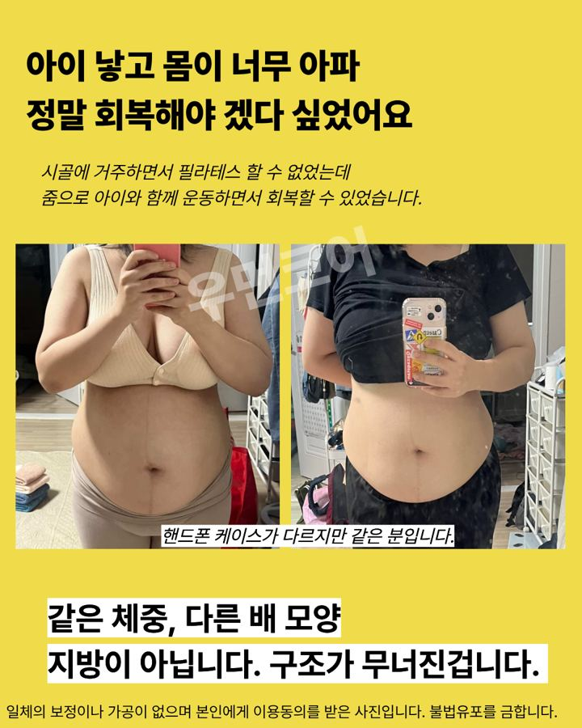
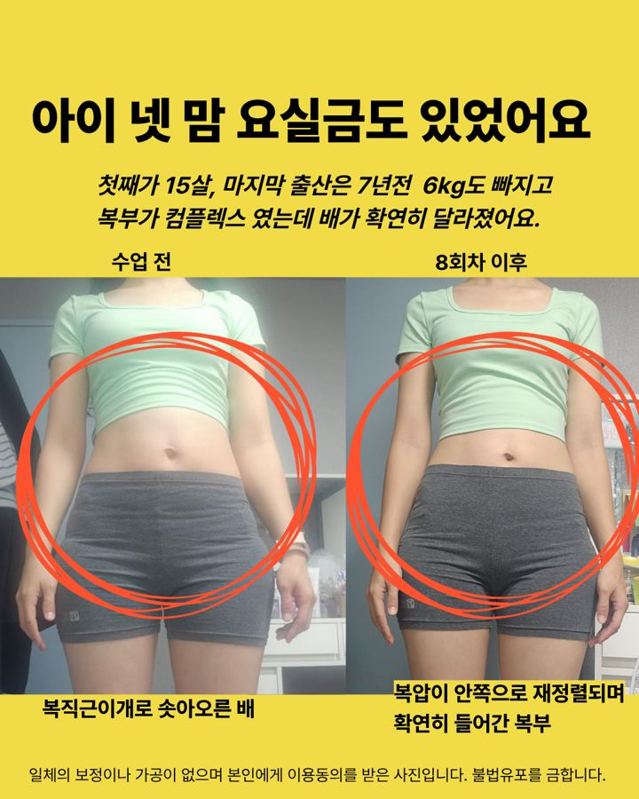
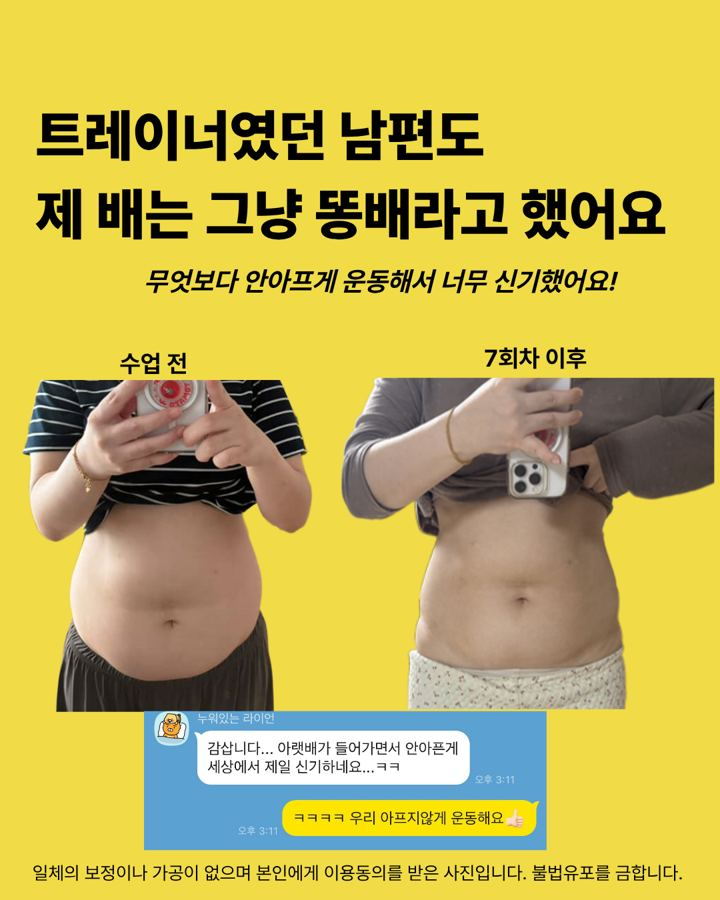
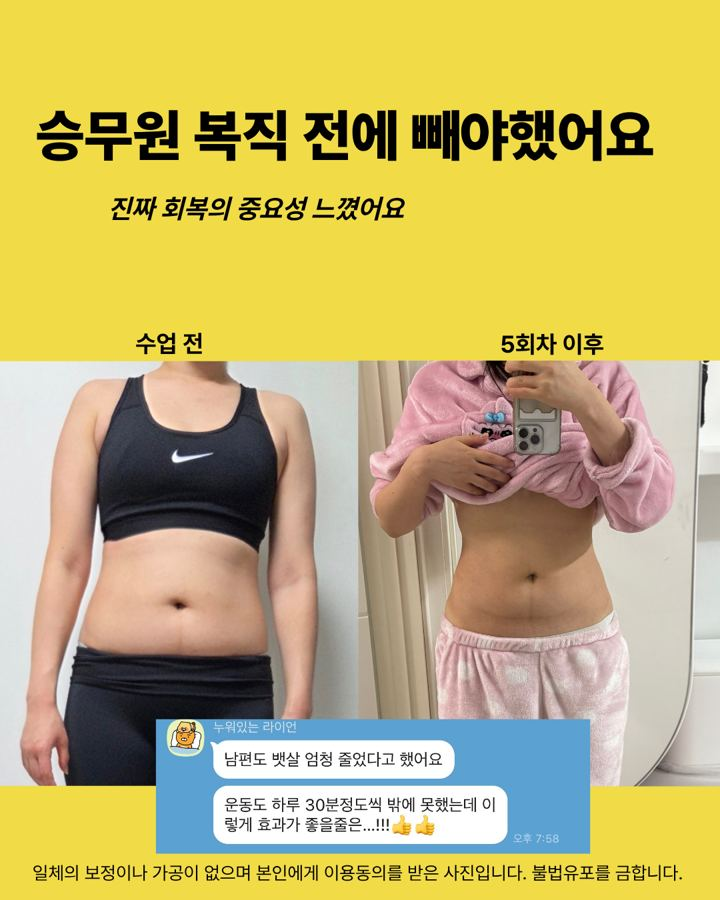
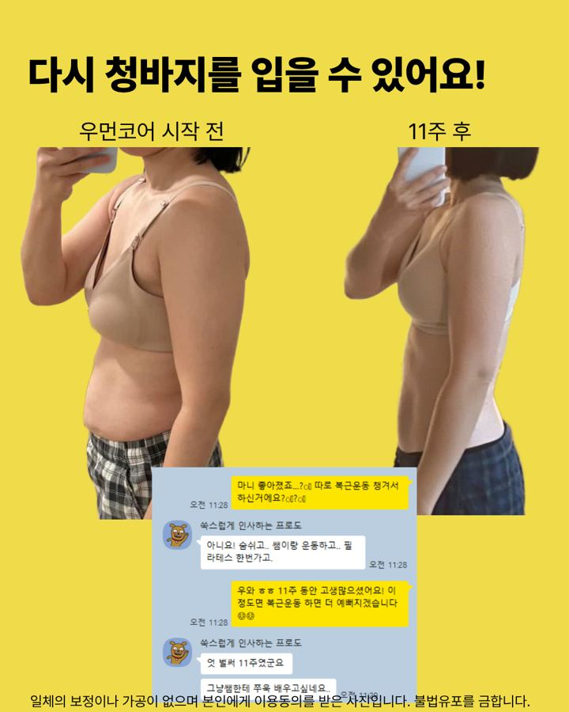
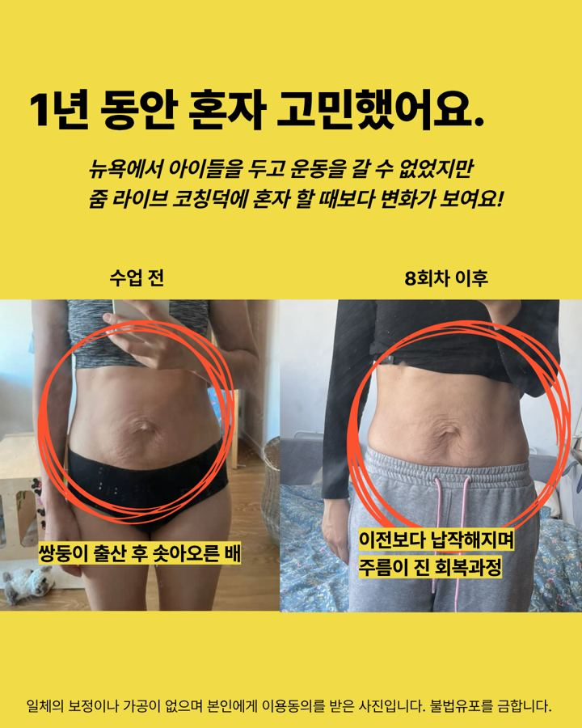
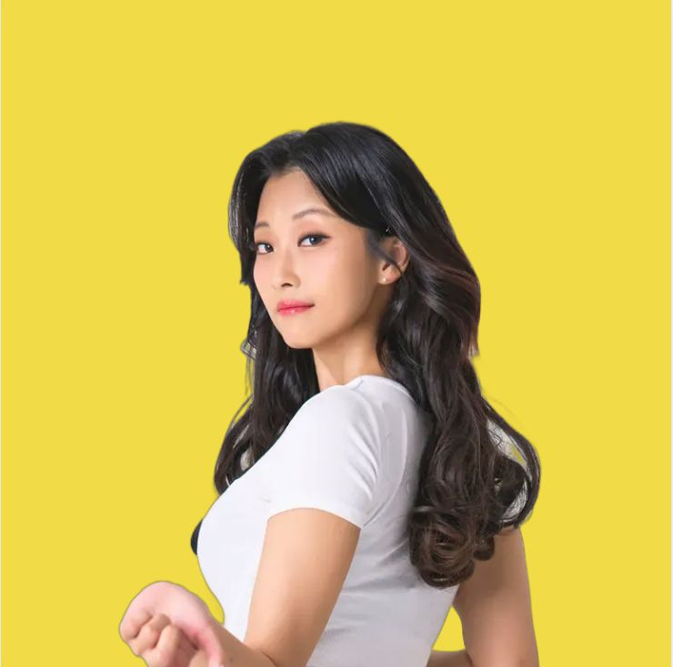

01 · 왜 안 들어갈까
홈트 영상만으로
홈트 영상만으로
어려운 이유 3가지
① 지지대가 늘어났어요
배 가운데 백선이 늘어나 힘이 가운데로 새요.
② 신호가 약해졌어요
속근육이 켜지는 감각이 무뎌져, 혼자서는 맞게 하는지 알기 어려워요.
③ 순서가 있어요
더 열심히가 아니라, 숨부터 다시 쌓아야 해요.
02 · 무엇이 다른가
PT·필라테스가 나쁜 게 아니라
PT·필라테스가 나쁜 게 아니라
설계가 달라요
일반 센터
- 다이어트·근력 중심
- 직접 방문, 준비 포함 2~3시간
- 50분 수업이 끝나면 끝
- 출산 이력은 참고 사항
womencore 1:1 코칭
- 출산 후 코어 구조 전문
- 집에서 줌 라이브 + 방문 1회
- 운동일지·영상 피드백, 24시간 답변
- "왜 지금 이 운동인지"부터 설명
03 · 실제 변화
남편들이 먼저 알아봤어요




모든 사진은 보정·가공이 없으며, 본인에게 이용 동의를 받아 게재했어요.
04 · 8주에 들어 있는 것
운동이 아니라
운동이 아니라
회복 설계예요
라이브 코칭 7회
산후 교육 1회
출장 케어 120분
소도구 5종
필라테스 VOD 15강
운동일지 피드백
24시간 내 답변
식단 관리
목표는 숫자 0이 아니라, 아내가 스스로 조절하는 힘이에요.

05 · 누가 하나요
직접 복직근이개를 겪고
직접 복직근이개를 겪고
회복한 코치, 정혜린
출산 후 모르고 지내다 아이가 만 6살 때 제 몸의 복직근이개를 발견했어요. 스스로 회복한 순서로 지금 엄마들을 코칭해요.
400회+1:1 코어 코칭 수업
4개국해외 수강생
SBS생방송 투데이 출연
함께 결정하기 전에
두 가지만 아내분께 물어봐 주세요
질문 1"이 회복, 지금 당신에게 필요해?"
질문 2"회복되면 어떤 하루를 보내고 싶어?"
답이 분명하다면, 먼저 45분 상담으로 지금 상태를 함께 확인해 보세요.